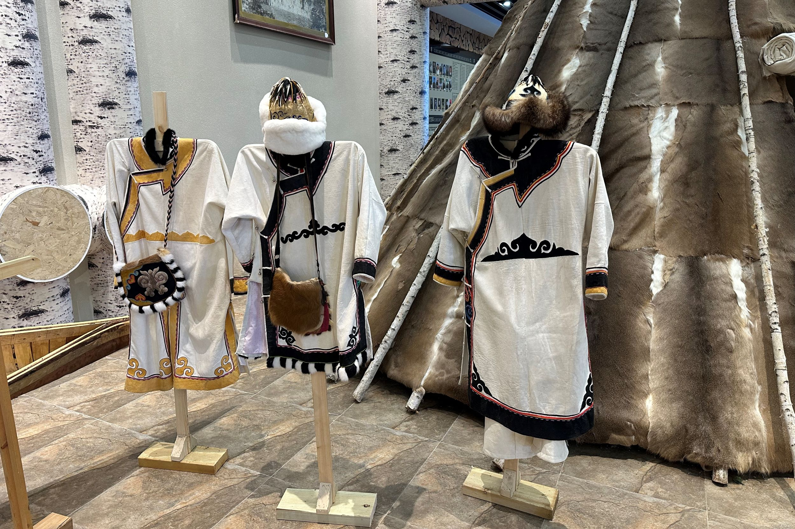
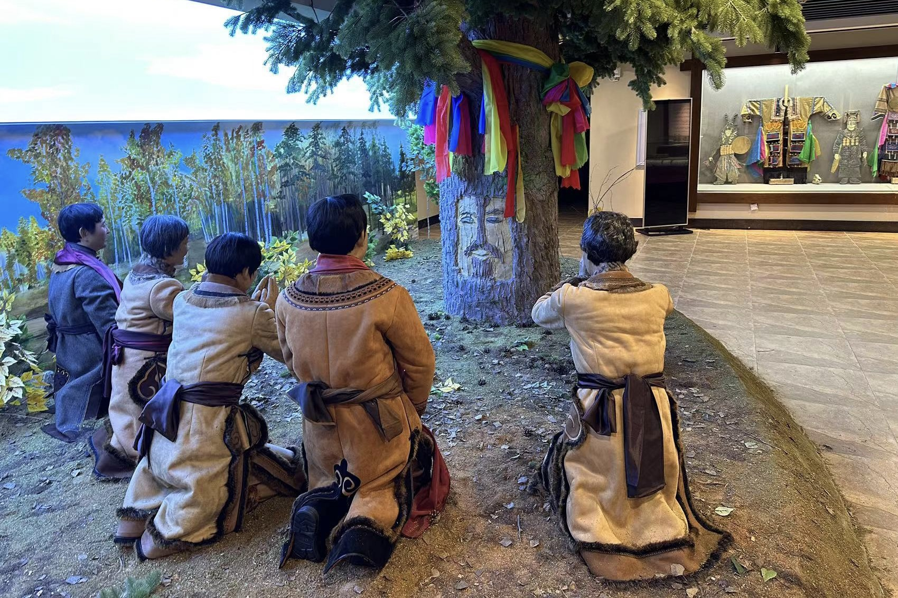
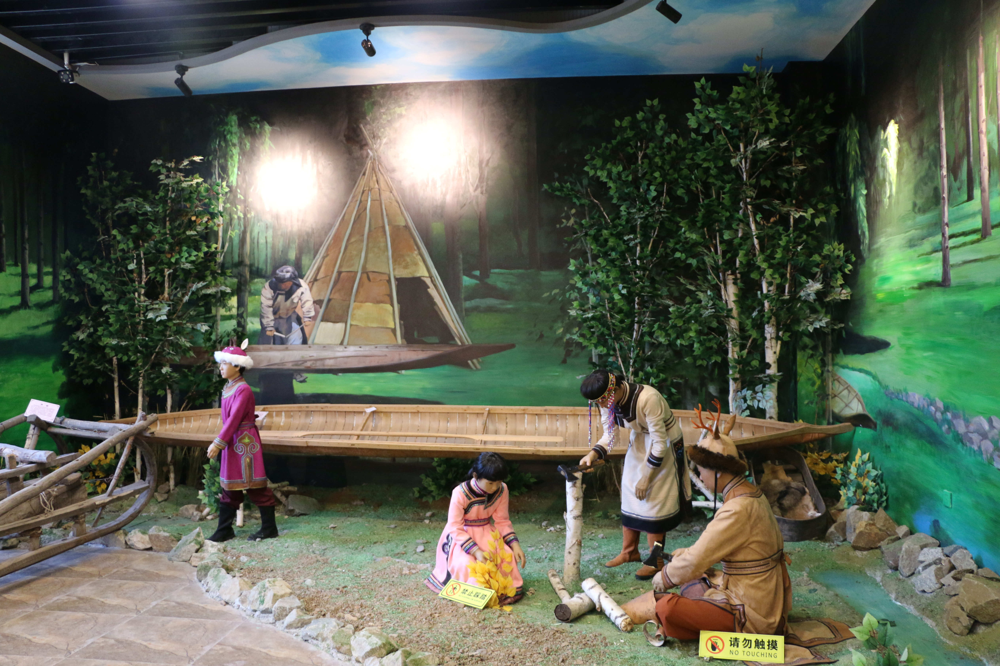

鄂伦春族信仰具有自然属性和万物有灵观念的萨满教。这种宗教与该民族特有的原始观念是紧密地结合在一起的。他们的宗教形式，表现为自然崇拜、图腾崇拜和祖先崇拜，“萨满”(巫师)是沟通神人之间的使者。萨满教信奉的神灵相当多。鄂伦春族崇拜的自然神有太阳神、月亮神、北斗星神、火神、天神、地神、风神、雨神、雷神、水神、青草神、山神等等。除自然崇拜外，鄂伦春先民还崇拜“牛牛库(熊)”、“老玛斯(虎)”图腾，鄂伦春人忌讳直乎熊、虎名、而是称它“宝日坎（神）”、“诺彦（官）”、“乌塔其（老爷）”。鄂伦春族对祖先崇拜十分盛行，而且现在亦如此。
历史上，鄂伦春人的房屋主要有“斜仁柱”、产房、土窖子、木刻楞房、桦皮棚（林盘）、布棚（麦汗）、高脚仓库（奥伦）等。“斜仁柱”是鄂伦春族游猎时最主要的住房，呈圆锥形。骨架用长若干米的主杆、带杈的树干和20多根“斜仁”(树干)搭成，其覆盖物有冬季用的狍皮围子，需用60余张狍皮缝制，也用桦树皮、芦苇帘和布围子。